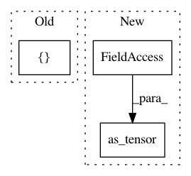

8f87f244813c98b98bbd379f973bdba0ed7a9c72,starry/_core/ops/integration.py,rTReflectedOp,infer_shape,#rTReflectedOp#Any#Any#,66
Before Change
return gof.Apply(self, inputs, outputs)
def infer_shape(self, node, shapes):
return [shapes[0] + (tt.as_tensor(self.N),)]
def R_op(self, inputs, eval_points):
if eval_points[0] is None:
return eval_points
After Change
def infer_shape(self, node, shapes):
return [
shapes[0] + (tt.as_tensor(self.N),),
shapes[0] + (tt.as_tensor(self.N),),
shapes[0] + (tt.as_tensor(self.N),),
]
In pattern: SUPERPATTERN
Frequency: 3
Non-data size: 3
Instances
Project Name: rodluger/starry
Commit Name: 8f87f244813c98b98bbd379f973bdba0ed7a9c72
Time: 2020-04-30
Author: rodluger@gmail.com
File Name: starry/_core/ops/integration.py
Class Name: rTReflectedOp
Method Name: infer_shape
Project Name: rodluger/starry
Commit Name: f065b29cc8667c3012761b9509886411d8095e57
Time: 2020-03-25
Author: rodluger@gmail.com
File Name: starry/_core/ops/integration.py
Class Name: sTReflectedOp
Method Name: infer_shape
Project Name: rtqichen/torchdiffeq
Commit Name: d041ccdc8112fa0d62ee9ad4ab4cecf0fd8e2cf3
Time: 2020-07-25
Author: 33688385+patrick-kidger@users.noreply.github.com
File Name: torchdiffeq/_impl/adams.py
Class Name: VariableCoefficientAdamsBashforth
Method Name: __init__